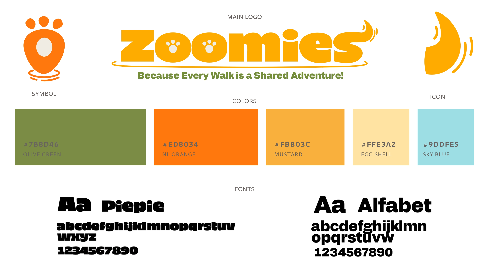

General Information
This branded website is publicly available at buas-media-interactive.github.io/my-website (please change text and hyperlink destination)
This website was created by:
- Elizaveta Riskova (ID: 235457)
- Karolina Radevall (ID: 232487)
- Zara Castelijn (ID: 213905)
- Devon Gijzen (ID: 232016)
Content
Please clarify here the match between students and pieces of content. Make sure that you provide a link to the correct page within the website
| # | Student ID | Value | Name and link of content |
|---|---|---|---|
| 1. | 000000 | Value | Content title |
| 2. | |||
| 3. | |||
| 4. |
Production
Design Elements
Please provide a list of design elements alongside their justifications:
-
A colour scheme (with HTML colour codes, which must be consistent with your final website)
— see the example below from the BUas brand book:
- #EE7622 The orange colour refers to the Dutch identity and the city of Breda (Oranjestad). Orange stands for…
- #00406B Dark blue signifies…
- Font choices
- User interface patterns (e.g. grids, carousels, menu organizations etc.)
- The structure of the navigation and content (e.g. how content units are distributed across pages)
- All these elements must be justified by referring to the theory and/or vocabulary of design
-
Please relate these elements to other units, for example:
- How does website design fit the values and personality of the brand?
- How does website design fit the marketing and communication strategy?
- How does website design help showcase the unique value proposal of the product?
Credits
Please provide links and/or credits for third-party elements including:
- HTML templates if these are different from this one (buas-media-interactive/prj4-group-template)
- The source code for UX patterns other than the ones provided by the “Bootstrap” library (see getbootstrap.com/docs for a list of such patterns)
- Images that were not produced by students themselves, including when crediting is not mandatory (in other words, we ask you to credit Unsplash images)
Testing Report
Please write about…
- Your testing goals – in other words, what you are trying to learn about your website?
-
Your testing methods, which includes information about:
- The test’s participants (number, match with target audience, etc.)
- The test’s setting (which material is used, is it done remotely, on campus, at home, etc.)
- The test’s protocol (what instructions are given, how it is recorded, etc.)
-
Your testing results, which includes information about:
- Positive and negative aspects of the UI/UX that have been identified, ranked by importance.
- Improvements that have been implemented on the final website (or that would be implemented if doing so would be too complex)
Marketing
Context of campaign and promotional activities
Explain the context of the campaign is (What the campaign is about, what the message is, which promotional activities were executed). In addition, present the objectives as mentioned in the Communication & Media Plan.
Explain and justify the chosen channels/platforms used and show there is a solid connection to the objectives established in the Communication & Media Plan.
Learning Points
Identify and justify your learning point (based on the Communication & Media Plan). What did you learn during the duration of the project concerning the campaign? What worked and what didn’t? What went as expected and what didn’t? What would you do differently? Reflect on the past work and describe what you learned.
Future Planning
Reflection on what has been done and describe in detail what you would do if the project would continue.
Describe in detail your future recommendations if the campaign would be continued.
Detail and describe clearly the process of what your would do differently based on you experience on this project related to the marketing assignment.
Professionalism
Present and organize below all social media/online activities of the campaign. Context and material are according to the brand style, image, and vision. Images on the site are of high-quality, readable, and properly designed.

Management
Lean Canvas
Fill in at least 2 bullet points per building block and according to the rubrics.
Problem
- List your top 3 problems you solve for your target group(s).
- Describe briefly how the problems are solved now (existing alternatives).
Solution
-
The eight interviews we have conducted showcased a number of problems dog owners are currently facing in their daily lives. Based on these problems, we will be implementing a number of features into our
application which will be the solution to these problems. First, we will add an interactive map showcasing dog-friendly locations and walking routes. This feature is a solution for the problem of dog owners
finding it challenging to find dog-friendly locations and safe places to walk their dog. Besides this, the application will feature a community feed providing interaction between dog owners in the nearby area
which will be the solution to dog owners struggling to find a community of dog owners in the nearby area. Also, it will solve the problem of dog owners struggling to balance their work and social life, since they
can create another part of their social life with those dog owners in their living area. The final solution is providing a feature where dog owners can easily ask health related questions to other dog owners
which gives the dog owner the opportunity to take even better care of their dog.
Customer segments
-
Everyone can be a dog owner and this has been proven by the eight interviews we have conducted. Therefore, the target audience for our brand will be dog owners between the ages of 25 and 60. Based on the
interviews, our target audience will be the dog owners who are mostly interested in the health, development, and social behavior of their dogs. Since the ages of our target audience are very broad, we have
decided to divide them between two subgroups being the dog owners between the ages of 25 and 40, and the dog owners between the ages of 40 and 60 since we will address them in a different manner based on which
social media platforms they are using. Our ideal customer in the form of our brand persona is Max van den Berg, a 32-year-old man living in Rotterdam with his 3-year-old Australian labradoodle Luna. Max is a
social, active, and responsible dog owner who struggles with finding dog-friendly locations and safe walking routes in the busy city. Max likes spontaneous outings, but his freedom is limited because he has his
dog Luna. He wants to socialize more together with his dog Luna, but he finds it difficult to find the correct information he needs to do this.
Unique value proposition
-
“A dog owner-friendly brand which provides dog-friendly comfort, community, and convenience.” Our brand listens to the target audience. We want our brand and app to help them in their daily struggles of being a
dog owner by helping them be more aware of a safer environment for their dogs. We want to provide comfort by providing the safest dog-friendly walking routes which alerts the dog owner about busy streets or rough
terrain. We want to provide a community by giving dog owners the ability to connect with each other. We want to provide convenience by showcasing dog parks, water stations, and vet services. All of this, with
just one easy application.
Unfair advantage
-
The unfair advantage of our brand that cannot easily be copied is that the brand thrives on the community of dog owners themselves. They help each other, on a localized manner, by creating the safest walking
routes and giving health related tips to each other.
Channels
-
As mentioned earlier, we have divided our broad target audience into two groups: the dog owners between the ages of 25 and 40, and the dog owners between the ages of 40 and 60. We will address both groups with a
different social media platform. We will address the first group with Instagram since that age division is more on that social media platform. We will address the second group using Facebook since that group is
more active on that social media platform.
Key metrics
-
The key metrics we will use to measure how our brand and application are doing will be 1) the number of time our app is downloaded, 2) the number of active users, and 3) the amount of discussions about dog health
related topics on our app.
Revenue streams
-
Our brand will be creating an application which dog owners can download to find the safest and dog-friendly locations and walking routes. Our revenue model will contain different ways of making revenue. First, we
will offer premium subscriptions which will allow dog owners to, for example, leave reviews on dog-friendly restaurants. We will also allow other companies to advertise their dog related products on our app which
we will receive revenue from. Also, with loyal companies, we will partner up so we can collaborate which we will also receive a revenue from.
Cost structure
-
Our fixed costs will be the salaries of our employees. Our employees will be hired to, for example, provide customer service to the dog owners who have downloaded the app or create the content to promote our
application. Also, the costs for the maintenance and development of our website and application are fixed costs because it will be an ongoing process of improvement. Our variable costs will be the advertising
costs since we will be advertising our brand/application monthly but in different ways and in different volumes.
Services/products
- State what your product and/or service is and how this contributes to your unique value proposition.
- Clarify the fit between the product/service developed and the brand identity/brand image.
Validation of Assumptions
Write a reflection on the choices made in creating choosing the trademark, including an analysis of the existing alternatives.
Appendix
Please use the list below to provide links to evidence for all parts of your justication. Please double-check all links before delivering the website. Do not hesitate to refer to these numbers above.